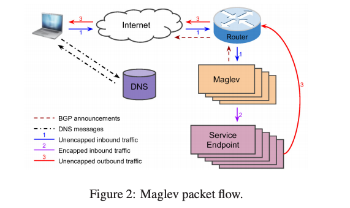
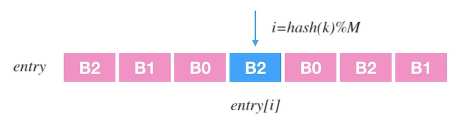
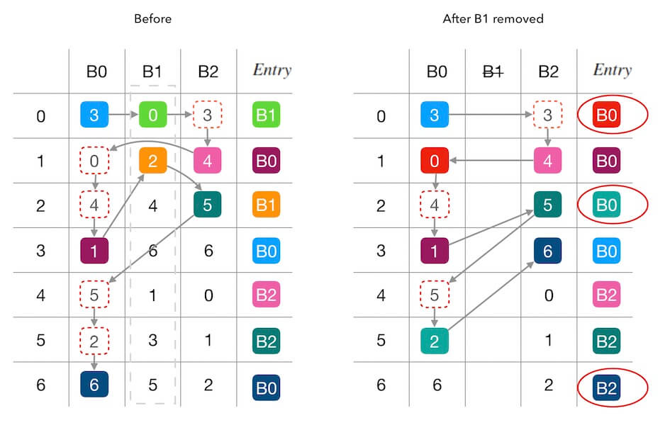
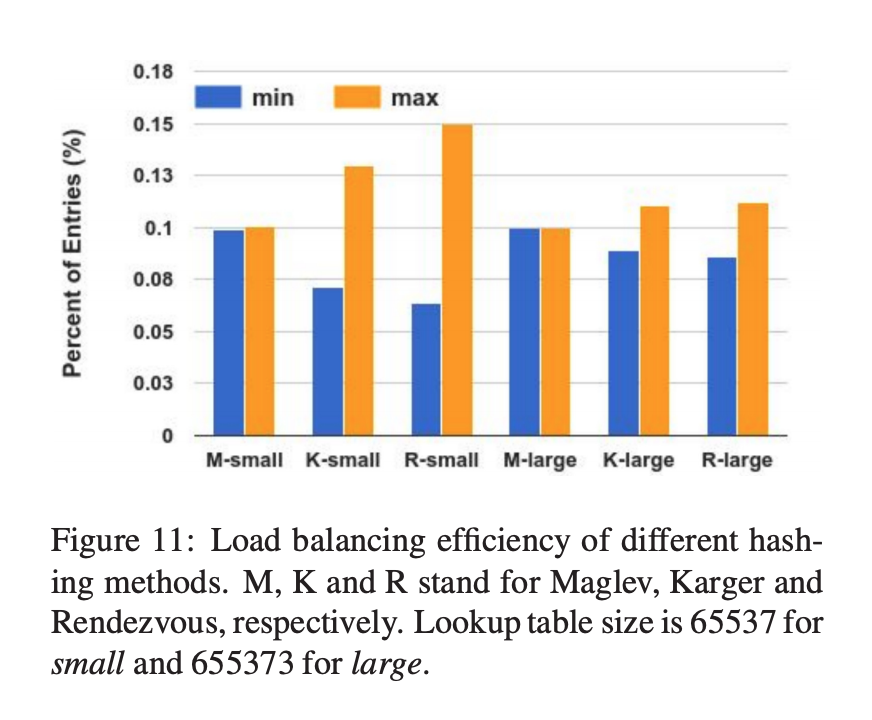

#1207 Maglev¶
论文：https://research.google.com/pubs/archive/44824.pdf
架构¶
Maglev 整体的架构和 unimog 基本差不多，如下图所示：
DNS 将服务解析到 VIP，用户访问服务时和 VIP 建立连接。
用户访问的流量包到达边缘机房的核心路由后使用 ECMP 将包分配给 Maglev。
Maglev 根据流量包的五元组计算哈希，使用哈希映射得到后端服务器，然后使用 GRE(Generic Routing Encapsulation) 封包，将流量包发给后端服务器。
最后后端服务器收到包后解包再处理包，处理完成后的回包直接发送出去，不再经过 Maglev。
和 unimog 不一样的地方在于 Maglev 使用的是 Connection Tracking + Consistent Hashing 来调度连接。
Maglev 每调度一个新连接后会将其分配的后端信息存储下来，这样下次同一连接的包过来时，直接将包发给对应的后端即可，这样后端的服务器有变更或者挂了，已建立的连接的包仍然会被发给同一个后端。
当 Maglev 本身有变更或者挂了的时候，ECMP 重新哈希之后一个连接的包可能会被分配给另外一个 Maglev 去处理，这个新分配的 Maglev 上可能没有这个连接的信息，此时就得依赖一致性哈希去将连接的包调度给同一个后端。
Maglev 的 Connection Tracking 使用固定大小的哈希表来存储连接信息，当 Maglev 是和其它服务混合部署的时候，会尤其限制这个哈希表的大小。
一致性哈希算法¶
https://writings.sh/post/consistent-hashing-algorithms-part-4-maglev-consistent-hash
一致性哈希的实现和 cf 的 forwarding table 非常类似，就是生成一个大的查找表，表中的条目映射到实际的后端服务器，设表长为 \(M\) ，流量包的五元组为 \(k\) ，则映射到后端的服务器的过程就是 \(entry \left[ hash(k) \% M \right]\) 。
查找表生成算法：
首先，为每一个后端服务器计算出一个长度为 \(M\) 的 查找表中的填充位置 的偏好序列。
取两个无关的哈希函数 \(h1\) 和 \(h2\) ，假设后端的名字是 \(b\)，计算偏好序列的方法如下：
查找表（偏好序列）的长度需要为 质数。因为 \(M\) 是质数，\(M\) 和 \(skip\) 必然互质，每个生成的偏好序列才能都轮一遍查找表中所有的槽位位置（详细可以参考 数学女孩 2：费马大定理 完全巡回的条件）。
然后我们循环所有的后端，对于每一个后端，使用其偏好序列中的数字作为查找表的位置索引，将后端填充到该位置上，如果该位置已经填充了后端，则顺延使用偏好序列中的下一个数字。如此直到整个查找表填充完成。
以论文中的示例查找表为例，我们用单步的方式来填充下这个表来理解下填充的整个过程：
\(B0\) 的偏好序列的第一个数字是 3， 所以填充 \(B0\) 到 \(entry \left[3 \right]\)。
轮到 \(B1\) 填充了，\(B1\) 的偏好序列第一个是 0，所以填充 \(B1\) 到 \(entry \left[0 \right]\)。
轮到 \(B2\) 填充了，由于 \(entry \left[3 \right]\) 被占用， 所以向下看 B2 偏好序列的下一个数字，是 4，因此填充 \(B2\) 到 \(entry \left[4 \right]\)。
接下来， 又轮到 \(B0\) 填充了， 该看它的偏好序列的第 2 个数字了，是 0，但是 \(entry \left[0 \right]\) 被占用了； 所以要继续看偏好序列的第 3 个数字，是 4， 同理， 这个也不能用，直到测试到 1 可以用， 则填充 B0 到 \(entry \left[1 \right]\) 。
如上， 直到把整张查找表填充满。
Maglev 的一致性哈希在某个后端挂了的情况下，影响的连接除了分发到这个后端的连接之外，还会稍微关联扰动（disruption）一些其它的连接，我们以下图删除一个后端为例，可以看到，\(Entry\) 中除了为 \(B1\) 的条目改变了之外，还影响了 \(entry \left[6 \right]\) 。
Maglev 一致哈希的均衡性比普通的一致性哈希和 Rendezvous 哈希都要好，或者说这个算法设计的目的就是均衡。
